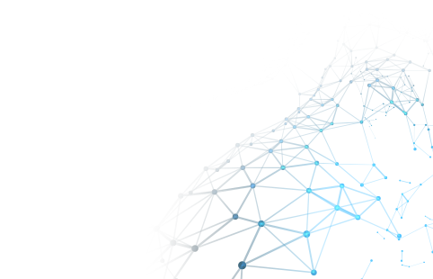
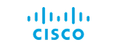
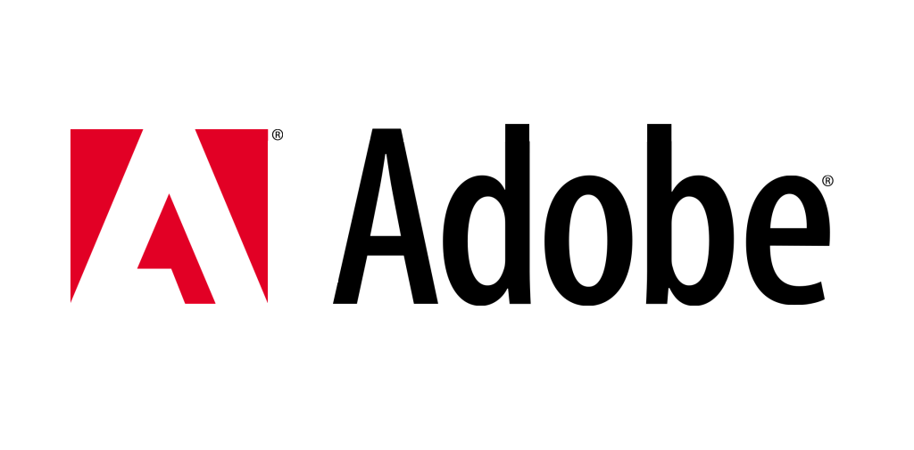
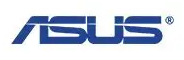
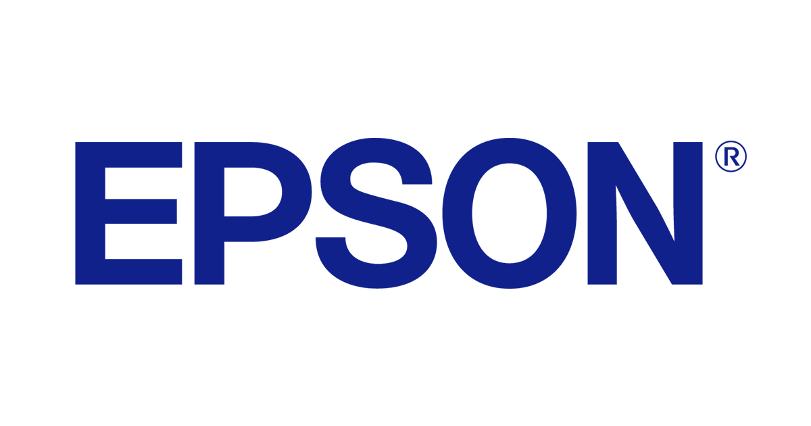
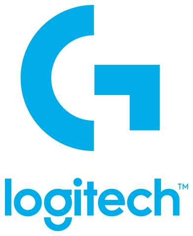
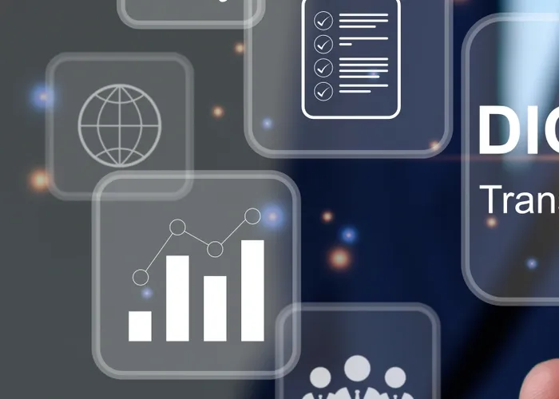
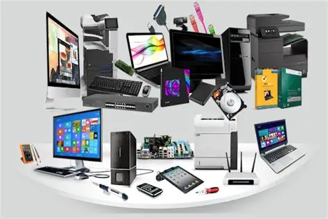
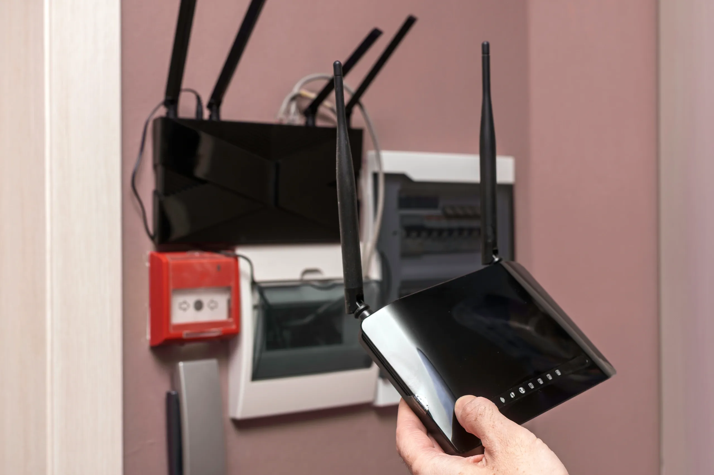

Votre partenaire
technologique de confiance
Nous écoutons vos défis, puis nous les résolvons. World Tech Consulting S.A accompagne les entreprises dans leur transformation digitale, la vente de matériel informatique, la réparation d'appareils, la sécurité électronique de leurs locaux et la protection de leurs données.
Le meilleur du matériel et des technologies




Ubiquiti Synology

Netgear Kaspersky ESET Netgear Kaspersky ESETVous ne savez pas par où commencer ?
C'est normal. Prenez rendez-vous pour un premier échange gratuit — nous vous aiderons à y voir plus clair.
Prendre rendez-vousDes solutions IT adaptées à votre réalité
Conseil, matériel, infrastructure managée ou cybersécurité — nous couvrons l'ensemble de vos besoins technologiques avec une approche sur mesure.

Conseil IT & transformation digitale
Modernisez vos processus, gagnez en compétitivité
La transformation digitale n'est pas une fin en soi — c'est un levier de croissance. Nous vous aidons à identifier les opportunités technologiques qui correspondent à votre métier et à les concrétiser de façon pragmatique.
- Audit complet de votre infrastructure et de vos processus existants
- Feuille de route digitale claire, priorisée et budgétisée
- Accompagnement au changement et formation de vos équipes
- Sélection et intégration des outils adaptés à votre taille
Services IT managés
Votre IT entre de bonnes mains, 24h/24
Externalisez la gestion de votre infrastructure IT à une équipe d'experts dédiés. Nous assurons la surveillance, la maintenance et le support de vos systèmes pour que vous puissiez vous concentrer sur votre cœur de métier.
- Surveillance proactive 24/7 de vos serveurs et réseaux
- Helpdesk réactif avec un interlocuteur dédié
- Maintenance préventive et mises à jour planifiées
- Rapports mensuels de performance et recommandations
Cybersécurité & cloud
Protégez vos données, migrez en toute sérénité
Les cybermenaces évoluent constamment. Nous mettons en place des défenses robustes et des architectures cloud sécurisées, adaptées à votre budget et à vos obligations réglementaires.
- Audit de sécurité et analyse des vulnérabilités
- Mise en place de politiques de sécurité et de sauvegarde
- Migration cloud sécurisée (Azure, AWS, Google Cloud)
- Formation de vos collaborateurs aux bonnes pratiques

Vente de matériel informatique
Le bon équipement, au bon prix, bien installé
Nous vous fournissons du matériel informatique de qualité — ordinateurs, serveurs, équipements réseau, imprimantes et périphériques — sélectionné selon vos besoins réels et votre budget. Chaque vente inclut la livraison, l'installation et la configuration sur site.
- Ordinateurs portables et de bureau (professionnels et grand public)
- Serveurs, NAS et équipements réseau (switches, routeurs, access points)
- Imprimantes, scanners et périphériques bureautiques
- Installation, configuration et mise en service incluses
Réparations & support technique
Votre appareil en panne ? On s'en occupe.
Réparation d'ordinateurs, laptops et mobiles, support technique, récupération de données et installation — nos techniciens certifiés interviennent rapidement pour minimiser votre temps d'arrêt.
- Réparation matérielle : écran, batterie, carte mère
- Support technique et dépannage logiciel
- Récupération de données sur tous supports
- Diagnostic gratuit avant toute intervention
Des fondations réseau solides pour votre entreprise
Au-delà du support quotidien, nous concevons et installons les infrastructures réseau, Wi-Fi, télécom et énergie qui font tourner votre entreprise.
Réseaux informatiques d'entreprise
Conception et mise en œuvre de réseaux répondant à vos exigences de connectivité et de disponibilité.
Wi-Fi professionnel
Des solutions Wi-Fi pensées pour une connectivité fiable dans vos bureaux ou espaces recevant du public.
Télécommunications
Des infrastructures de télécommunication adaptées à vos besoins de communication internes et externes.
Solutions énergétiques de protection
Onduleurs et solutions de protection électrique pour assurer la disponibilité de vos équipements sensibles.
Un processus simple et transparent
Écoute & diagnostic
nous prenons le temps de comprendre votre entreprise, vos défis et vos objectifs avant de proposer quoi que ce soit.
Proposition sur mesure
nous élaborons une solution adaptée à votre réalité, avec un budget clair et un calendrier réaliste.
Mise en œuvre
notre équipe déploie la solution en minimisant les perturbations de votre activité.
Suivi & optimisation
nous restons à vos côtés après la mise en place pour ajuster, optimiser et faire évoluer la solution.
Une approche humaine au service de la technologie
Nous ne faisons pas que conseiller. Nous équipons, sécurisons et faisons évoluer votre infrastructure IT de A à Z.
Approche consultative
Nous commençons toujours par comprendre votre métier avant de proposer une solution technologique.
Expertise certifiée
Notre équipe détient les certifications les plus reconnues du secteur IT.
Tarification transparente
Pas de surprises. Des devis clairs, des engagements tenus, des résultats mesurables.
Support réactif
Un interlocuteur dédié et une équipe disponible pour répondre à vos besoins en temps réel.
Parlons de votre projet
Chaque entreprise est unique. Prenez rendez-vous pour un premier échange gratuit et sans engagement — nous vous proposerons une approche personnalisée adaptée à vos enjeux.
Équipez votre entreprise avec les meilleures marques
Ordinateurs, serveurs, réseau, imprimantes et accessoires — nous vous fournissons le matériel adapté à vos besoins, avec installation et support inclus.
Tout le matériel dont vous avez besoin
Ordinateurs portables
PC portables professionnels et grand public des meilleures marques.
Ordinateurs de bureau
Tours, all-in-one et mini PC configurés selon vos besoins.
Serveurs & stockage
Serveurs rack et tour, NAS et solutions de sauvegarde.

Réseau & connectivité
Routeurs, switches, access points et câblage réseau.
Imprimantes & consommables
Imprimantes laser et jet d'encre, scanners, consommables d'origine.
Écrans & périphériques
Moniteurs, claviers, souris, webcams et accessoires bureautiques.
Tablettes & mobiles
Tablettes et smartphones professionnels pour vos équipes en mobilité.
Logiciels & licences
Licences Microsoft 365, Windows, antivirus et logiciels professionnels.
Nos équipements les plus demandés
HP EliteBook 840 G10
Intel Core i7, 16 Go RAM, SSD 512 Go — idéal pour les professionnels exigeants.
Demander un prix →Dell PowerEdge T150
Serveur tour compact, Intel Xeon, idéal pour les PME souhaitant héberger leurs données en local.
Demander un prix →Ubiquiti UniFi AP
Access point Wi-Fi 6 professionnel pour une couverture réseau optimale dans vos locaux.
Demander un prix →HP LaserJet Pro M404dn
Imprimante laser monochrome rapide et économique, parfaite pour les bureaux.
Demander un prix →Plus qu'une vente, un accompagnement complet
Livraison sur site
Nous livrons votre matériel directement dans vos locaux à Pétion Ville et environs.
Installation & configuration
Nos techniciens installent et configurent votre équipement selon vos besoins spécifiques.
Garantie & SAV
Tous nos produits sont garantis constructeur avec un service après-vente réactif.
Support technique
Notre équipe reste disponible après l'achat pour tout problème ou question technique.
Besoin d'un devis pour votre entreprise ?
Contactez-nous avec la liste de votre matériel souhaité — nous vous répondons sous 24h avec une offre personnalisée.
Demander un devisVotre appareil en panne ? On s'en occupe.
Ordinateurs, laptops, mobiles, serveurs — nos techniciens certifiés diagnostiquent et réparent rapidement vos équipements pour minimiser votre temps d'arrêt.
Tout ce dont vous avez besoin
Réparation d'appareils
Ordinateurs, laptops et mobiles
Panne matérielle, écran cassé, batterie défaillante, surchauffe — nos techniciens diagnostiquent et réparent tous types d'appareils informatiques et mobiles avec des pièces d'origine.
- Remplacement d'écran, clavier, batterie
- Réparation carte mère et composants internes
- Nettoyage et maintenance préventive
- Diagnostic complet offert avant devis
Support technique
Assistance et dépannage expert
Virus, lenteurs, problèmes réseau, logiciels qui ne démarrent plus — notre équipe intervient rapidement pour résoudre tous vos problèmes techniques, sur site ou à distance.
- Suppression de virus et malwares
- Optimisation et accélération des systèmes
- Dépannage réseau et connectivité
- Support à distance disponible
Installation & configuration
Mise en service complète de vos équipements
Nouvel ordinateur, nouveau réseau ou nouveau logiciel — nous prenons en charge l'installation, la configuration et la mise en service de tous vos équipements informatiques.
- Installation et configuration Windows / macOS
- Mise en place de réseaux Wi-Fi et filaires
- Configuration de messagerie et Microsoft 365
- Migration de données vers un nouvel appareil
Récupération de données
Vos données sont précieuses — on les récupère
Disque dur défaillant, suppression accidentelle, formatage involontaire — nos experts en récupération de données utilisent des outils professionnels pour retrouver vos fichiers perdus.
- Récupération sur disques durs HDD et SSD
- Récupération sur clés USB et cartes mémoire
- Récupération après formatage ou suppression
- Diagnostic gratuit avant intervention
Un processus simple et transparent
Dépôt & diagnostic
Apportez votre appareil en boutique ou contactez-nous. Nous effectuons un diagnostic complet et gratuit.
Devis clair
Vous recevez un devis détaillé avant toute intervention. Pas de surprise, pas de frais cachés.
Réparation rapide
Nos techniciens interviennent dans les meilleurs délais avec des pièces de qualité.
Restitution & garantie
Votre appareil vous est rendu fonctionnel avec une garantie sur la réparation effectuée.
Des techniciens certifiés à votre service
Techniciens certifiés
Notre équipe est formée et certifiée sur les principales marques et systèmes.
Délais rapides
La plupart des réparations courantes sont effectuées en 24 à 48 heures.
Garantie sur réparation
Toutes nos réparations sont garanties. Si le problème revient, on le règle sans frais.
En plein cœur de Pétion-Ville
Notre atelier est situé au Complexe Evergreen, 3ème étage #3A, Rue Panaméricaine et Nerettes, Pétion-Ville, Haïti.
Votre appareil a besoin d'aide ?
Apportez-le en boutique ou contactez-nous pour un diagnostic gratuit. Nous intervenons rapidement.
Protégez vos locaux, vos équipes et vos valeurs
Vidéosurveillance, contrôle d'accès, alarmes, sécurité périmétrique et supervision centralisée — nous concevons, installons et intégrons des systèmes de sécurité électronique adaptés au niveau de risque, aux flux et au budget de votre site.
Des systèmes de sécurité intégrés, pensés pour votre réalité
Chaque site est différent — nous combinons les technologies adaptées pour couvrir l'ensemble du cycle : prévenir, détecter, vérifier et réagir.
Vidéosurveillance & VMS
Supervision centralisée de vos caméras sur un ou plusieurs sites, archivage sécurisé, analytique vidéo et accès à distance — d'un petit commerce à un réseau multi-sites.
Contrôle d'accès
Badges, biométrie et gestion des visiteurs sur une plateforme unique, avec des profils d'autorisation par zone, horaire et niveau de sécurité.
Détection d'intrusion & alarmes
Détecteurs d'ouverture, de mouvement et de bris couplés à la vidéo, avec remontée d'alarme immédiate vers un centre de surveillance.
Sécurité périmétrique
Clôtures, points d'accès et espaces ouverts protégés par capteurs de proximité et caméras, pour une détection précoce des intrusions.
Centre de sécurité opérationnel
Une interface unique qui relie vidéo, alarmes et contrôle d'accès pour coordonner les interventions et garder une traçabilité complète des incidents.
Reconnaissance de plaques & accès véhicules
Gestion intelligente des entrées et sorties de véhicules, listes noires/blanches — utile pour les sites sensibles, résidences sécurisées et zones logistiques.
Protection anti-vol pour institutions financières
Banques, coopératives et maisons de transfert d'argent font face à des risques spécifiques. Nous proposons des dispositifs discrets de marquage et de géolocalisation des espèces — traceurs GPS dissimulés et sachets de marquage à l'encre indélébile — installés dans les caisses, coffres et distributeurs automatiques, couplés à une surveillance des tentatives d'intrusion sur les GAB.
Ces technologies, éprouvées depuis des décennies dans la protection bancaire à l'international, affichent un taux moyen de récupération des fonds volés d'environ 70 % lorsqu'un dispositif de marquage est utilisé — un argument de poids compte tenu du contexte sécuritaire local.
Voir nos solutions financièresPrévenir • Détecter • Vérifier • Réagir
World Tech Consulting S.A propose des équipements de contrôle et de surveillance pour protéger les lieux sensibles : aéroports, ports, douanes, frontières, entrepôts, centres de données, bâtiments publics et grands événements.
De l'entrée du site jusqu'à la salle de contrôle, nous réunissons des technologies complémentaires de marques reconnues dans le monde entier : Rapiscan, Thruvision, Rohde & Schwarz et Intellicene.
| Étape | Ce que nous faisons | Marque |
|---|---|---|
| 1. Contrôle des bagages, marchandises et véhicules | Scanners à rayons X, détection d'explosifs et inspection sous les véhicules | Rapiscan |
| 2. Contrôle des personnes à distance | Caméra qui repère les objets cachés sous les vêtements, sans toucher la personne | Thruvision |
| 3. Scanner corporel de haute précision | Contrôle rapide et précis des personnes, dans le respect de la vie privée | Rohde & Schwarz |
| 4. Centre de contrôle et réaction | Toutes les alarmes et caméras réunies sur un seul écran pour réagir vite | Intellicene |
Des technologies complémentaires, de l'entrée au centre de contrôle
- Scanners à rayons X pour bagages, colis, marchandises et véhicules
- Détection d'explosifs dans les bagages en soute et en cabine, avec images 3D haute résolution
- Détection de traces d'explosifs et de drogues, de radioactivité et de métaux
- Plus de 100 000 équipements Rapiscan installés dans le monde
- Formation, pièces de rechange et assistance technique incluses
Une gamme complète
| Domaine | Utilisation |
|---|---|
| Bagages et colis | Points de contrôle, fret aérien, recherche d'objets interdits |
| Bagages en soute | Scanner 3D RTT110 avec tri automatique des bagages |
| Marchandises et véhicules | Rayons X de forte puissance pour conteneurs, camions et cargaisons |
| Radioactivité | Portiques de détection aux frontières, ports et points d'accès |
| Métaux et personnes | Portiques détecteurs de métaux aux points de contrôle |
Lieux recommandés : aéroports, zones douanières, ports, entrepôts et centres logistiques, sites sensibles, bâtiments publics et entrées contrôlées.
- Photographie le dessous de chaque véhicule en quelques secondes, sous deux angles
- Repère automatiquement tout objet anormal (colis caché, modification suspecte)
- Garde une « empreinte » du dessous de chaque véhicule pour la comparer à ses passages précédents
- Fonctionne même si le véhicule ralentit, s'arrête ou ne roule pas droit
- Contrôle jusqu'à 32 km/h, sans faire arrêter les véhicules
- Scanner encastré dans le sol, résistant à l'eau et à la poussière
- Options : lecture des plaques, identification du type de véhicule, badges sans contact, code QR et photo des occupants
Ce que comprend l'installation
| Équipement | Logiciel |
|---|---|
| Scanner encastré dans la chaussée avec éclairage LED | Historique des passages, recherche et analyse |
| Caméra de lecture des plaques | Comparaison automatique avec les passages précédents |
| Boîtier de commande et feu de signalisation | Liaison avec les systèmes de vidéosurveillance et de contrôle d'accès existants |
| Poste opérateur et licences | Rapports, droits par utilisateur et durée de conservation des données réglable |
Ce que vous y gagnez : un meilleur contrôle des véhicules qui entrent, aucun angle mort sous les voitures, et une trace de chaque passage pour les vérifications et les enquêtes.
- Caméra passive : elle n'émet aucun rayonnement et ne présente aucun danger pour la santé
- Repère les objets métalliques et non métalliques cachés sous les vêtements
- Montre la taille, la forme et l'emplacement de l'objet pour décider rapidement
- Contrôle respectueux, sans toucher la personne et à bonne distance
- Fonctionne pour des personnes à l'arrêt ou en mouvement
- Idéal pour contrôler beaucoup de monde sans ralentir le passage
Ce qu'il peut détecter
| Type d'objet | Exemples |
|---|---|
| Armes | Couteaux, armes à feu et objets dangereux |
| Contrebande | Drogues, argent liquide, tabac |
| Vol en entreprise | Téléphones, appareils électroniques, marchandises |
| Autres | Liquides et tout objet qui bloque la chaleur naturelle du corps |
Lieux recommandés : douanes et frontières, entrepôts et centres logistiques, centres de données, aéroports, ports, bâtiments publics, événements et sites sensibles.
- Scanner corporel par ondes radio, sans danger pour la santé
- QPS201 : détecte automatiquement les objets cachés sur le corps ou dans les vêtements
- QPS Walk2000 : contrôle en marchant, sans s'arrêter et sans contact
- Intelligence artificielle capable de repérer tous types de menaces
- Affiche une silhouette simple, jamais une image réelle du corps : la vie privée est respectée
Ses 4 points forts
| Atout | Ce que cela veut dire |
|---|---|
| Rapide | Résultat en quelques secondes, voire instantané selon le modèle |
| Précis | Montre exactement où se trouve l'objet, donc moins de fouilles manuelles |
| Respectueux | Pas d'image du corps, seulement un schéma |
| Pratique | Facile à traverser, accessible et compatible avec l'évacuation d'urgence |
Lieux recommandés : aéroports, centres de données, sites sensibles et contrôle des employés.
- Supervision : vue en temps réel de tout ce qui se passe sur vos sites
- Réunit caméras, cartes, alarmes, capteurs, lecture de plaques, contrôle d'accès, détection incendie, radars et GPS
- Intervention : envoi des équipes sur le terrain et suivi de leur intervention
- Analyse : tableaux de bord, indicateurs et rapports
- Des décisions plus rapides et plus faciles à vérifier
Comment ça fonctionne
toutes les informations arrivent au même endroit : caméras, alarmes, capteurs, contrôle d'accès, incendie.
le système relie les événements entre eux, les place sur une carte et applique vos procédures.
les bonnes équipes sont alertées et envoyées sur place, avec suivi en direct.
chaque incident est enregistré pour les rapports, les audits et les enquêtes.
Questions fréquentes
Non. Les caméras Thruvision n'émettent aucun rayonnement et les scanners Rohde & Schwarz fonctionnent par ondes radio, sans danger. Les scanners Rapiscan respectent les normes internationales de sécurité.
Non. Ils affichent seulement une silhouette simple avec l'emplacement de l'objet suspect.
Dans la plupart des cas, oui. Nos solutions s'intègrent aux systèmes existants. Nous vérifions la compatibilité lors de l'étude.
Oui. Entrepôts, centres de données, sièges d'entreprise et événements utilisent aussi ces technologies pour contrôler les accès et éviter les vols.
Nos équipes assurent l'installation, la formation, la maintenance préventive et corrective et le dépannage.
Comment nous travaillons
Une solution de sécurité ne se limite pas à l'équipement : elle demande aussi une étude, une installation soignée, une formation et un suivi.
Comprendre
Visite du site et étude de vos besoins
Concevoir
Choix de la technologie selon le niveau de risque, le nombre de passages, l'importance du site et votre budget
Déployer
Fourniture, installation, raccordement à vos systèmes existants et mise en service
Sécuriser
Tests complets et formation de votre personnel
Accompagner
Maintenance préventive et corrective, assistance locale
Zone d'intervention
Partout en Haïti, dans les 10 départements :
Aéroports, ports, postes frontaliers, entrepôts, bâtiments publics et entreprises privées.
Pourquoi choisir World Tech Consulting S.A
- Des marques reconnues dans le monde entier, réunies dans une seule solution
- Une protection complète, de l'entrée du site jusqu'au centre de contrôle
- Des technologies sans danger et respectueuses de la vie privée
- Installation, formation et maintenance assurées localement
- Un interlocuteur unique de l'étude au service après-vente
Un projet de sécurité en tête ?
Contactez-nous pour une étude technique gratuite et une proposition adaptée à votre site.
Ingénierie, intégration et assistance locale pour vos aéroports
World Tech Consulting S.A accompagne les aéroports, ports, douanes, opérateurs de fret et organismes gouvernementaux avec des solutions clé en main, de l'étude jusqu'au service après-vente : conception, fourniture, installation, mise en service, formation et maintenance. Nous réunissons des marques internationales spécialisées dans un seul écosystème opérationnel.
Ingénierie • Intégration • Assistance locale
Couverture complète de l'aéroport
| Zone de l'aéroport | Ce que nous installons |
|---|---|
| Terminal (zone passagers) | Scanners à rayons X, portiques détecteurs de métaux, scanners corporels, détection de contrebande, contrôle d'accès et caméras |
| Bagages | Tapis roulants, tri automatique des valises et contrôle par rayons X |
| Pistes et avions | Passerelles d'embarquement, alimentation et climatisation des avions, bus de piste et camions de pompiers |
| Clôtures et alentours | Détection d'intrusion sur les clôtures et radars contre les intrus et les drones |
| Centre de contrôle | Salle de surveillance qui réunit toutes les caméras et alarmes sur un seul écran |
| Parking | Barrières automatiques, lecture des plaques et paiement électronique |
| Assistance locale | Installation, formation, maintenance et dépannage par World Tech Consulting S.A |
Nos solutions par domaine
- Solutions complètes pour points de contrôle : rayons X, détecteurs de métaux, détection de traces et assistance aux opérateurs
- RTT110 : scanner de détection d'explosifs en 3D pour bagages enregistrés, débit élevé et faible coût d'exploitation
- ORION 928DX : double vision pour objets volumineux, avec alertes explosifs et stupéfiants
- ITEMISER 5X : détection de traces portable, analyse rapide
- METOR 900 : portique détecteur de métaux haute précision
- GateKeeper : inspection et contrôle d'accès automatisé des véhicules
- Imagerie haute définition par ondes radio, sans danger pour la santé
- Détection intelligente d'objets métalliques et non métalliques dissimulés sur le corps
- Sans contact et sans rayonnement ionisant pour la personne contrôlée
- QPS201 pour l'inspection statique, QPS Walk2000 en passage continu pour les flux élevés
- Pour les aéroports, infrastructures critiques et contrôle des employés
- Détection d'argent liquide, de stupéfiants et de marchandises dissimulées sur les personnes
- Technologie déployée à plus de 100 points d'entrée terrestres, maritimes et aériens dans le monde
- Peu de maintenance, mise en route rapide, déploiement flexible
- Idéal pour douanes, fret, employés, fournisseurs et zones réglementées
- Contrôle d'accès, détection d'intrusion, vidéo, gestion des visiteurs et application mobile sur une seule plateforme
- Gestion des accès pour aéroports partagés entre plusieurs compagnies, avec autorisations et profils de sécurité
- Commandement intelligent : événements, cartes, vidéos et procédures d'intervention réunis
- Accès : badges, autorisations, portes sensibles • Vidéo : enregistrement, surveillance et analyse • Commandement : alertes, plans du site, coordination des interventions
- Pour terminaux, zones côté pistes et côté public, zones réglementées, parkings, bâtiments administratifs et centres de contrôle
- Automates, logiciels et capteurs pour surveiller et piloter les bâtiments
- Centralise climatisation, ventilation, éclairage, alimentation électrique, comptage, plomberie et surveillance incendie
- Plus de confort, d'efficacité et d'économies d'énergie, meilleure réaction aux anomalies
- Système ouvert, compatible avec les principaux équipements du marché
- Atouts : confort, efficacité énergétique, pilotage centralisé, maintenance préventive, suivi de la consommation
- Manutention, tri et transport automatisés des bagages enregistrés
- Intégration des comptoirs d'enregistrement, convoyeurs, carrousels, trieuses, déviateurs, postes de contrôle par rayons X et logiciels de pilotage
- FAST2CHECK : retour automatique des bacs au point de contrôle, pour un contrôle plus rapide et un meilleur flux de passagers
- Solutions sur mesure : efficacité, fiabilité, sécurité et traçabilité des bagages
- Partenaire reconnu de l'Association internationale des aéroports (ACI Europe)
- Conception, fabrication et installation de systèmes complets de gestion des bagages
- Modernisation de terminaux en activité en limitant les arrêts d'enregistrement
- Nouveaux projets : ingénierie, production, intégration, mise en service et après-vente
- Raccordement aux scanners à rayons X, trieuses, carrousels, convoyeurs et systèmes de sécurité
- Logiciel de simulation, de supervision en temps réel et d'optimisation du flux
- Partenaire stratégique de l'IATA (Association du transport aérien international) et de l'ACI Europe
- Passerelles d'embarquement pour tous types d'avions, du moyen-courrier au gros porteur
- Climatisation des avions au sol, alimentation électrique des avions, guidage d'accostage, eau potable
- Bus de piste, véhicules de service et de soutien
- Pour nouveaux terminaux, extensions, maintenance et modernisation
- Camions incendie aéroportuaires en 4x4, 6x6 et 8x8, conformes aux normes de l'OACI (aviation civile internationale)
- Forte capacité d'attaque initiale : lances puissantes et grandes réserves d'eau et de mousse
- Intervention sur pistes, aires de stationnement, hangars, terminaux et infrastructures critiques
- Véhicules de secours technique, pompes, tuyaux et équipements incendie
- Atterrissages de haute précision grâce au GPS renforcé depuis le sol (système SmartPath)
- Plus de capacité, meilleure gestion de l'espace aérien, moins de retards
- Moins de bruit, moins de retards liés à la météo, coûts réduits par rapport aux systèmes classiques
- Accompagnement complet : évaluation, étude de site, installation, vol de contrôle et homologation
- Détection par capteurs, laser et infrarouge
- Capteurs de clôture, câbles de détection enterrés et barrières micro-ondes, ainsi que capteurs pour les barres d'arrêt des pistes
- Détection des intrusions avant qu'elles n'atteignent la piste ou les zones sensibles
- Compatible vidéosurveillance, supervision d'alarmes et procédures d'intervention
- Détection précoce des personnes, véhicules, bateaux et drones
- Radars compacts : détection, classification et suivi automatiques
- Orientation automatique des caméras vers la menace et réduction des fausses alarmes grâce à l'intelligence artificielle
- Surveillance 24h/24, 7j/7, même en faible visibilité
- Pour pistes, voies de circulation, périmètres et zones isolées
- Interface unique pour plusieurs sources vidéo et systèmes de sécurité
- Croisement des données de différentes plateformes pour une vue d'ensemble
- Surveillance continue, coordination et gestion des incidents
- Pour terminal, périmètre, piste, fret, parkings et multi-sites
- Technologie utilisée dans plus de 200 aéroports dans le monde
- Adapté aux voyageurs, employés, taxis, voituriers et agences de location
- Entrée sans ticket, passage sans arrêt, lecture automatique des plaques, réservation et paiement électronique
- Plus de 100 fonctions : tarifs, abonnements, rapports, liaison avec la comptabilité
- Pour parkings courte et longue durée, accès véhicules, parkings employés
Zone d'intervention
Partout en Haïti, dans les 10 départements :
Aéroports, ports, postes frontaliers, fret et bâtiments administratifs.
Pourquoi choisir World Tech Consulting S.A
- Intégration clé en main : conception, fourniture, installation, mise en service, formation et maintenance
- Grandes marques internationales réunies dans un écosystème commun
- Assistance technique locale pour aéroports, ports, fret, douanes et organismes publics
- Continuité du service : pièces détachées, maintenance préventive et corrective, amélioration continue
- Un interlocuteur unique de l'étude au service après-vente
Un projet aéroportuaire en préparation ?
Étude, fourniture, installation, mise en service, formation et maintenance : un seul interlocuteur, de l'étude au service après-vente.
Détecter, suivre et récupérer : protégez l'argent et votre personnel
World Tech Consulting S.A protège les banques, coopératives, maisons de change et guichets automatiques contre le vol. Traceurs GPS cachés, encre anti-vol et vidéosurveillance intelligente : nos solutions permettent de détecter un vol, de suivre l'argent volé et d'aider à le récupérer, tout en évitant de mettre le personnel en danger.
Forte de 13 ans d'expérience et de plus de 200 clients accompagnés, World Tech Consulting S.A s'appuie sur des technologies de référence : 3SI Security Systems et Wren Solutions pour les traceurs et l'encre anti-vol, et le logiciel Edge360 Surveill pour la vidéosurveillance. Nos équipes assurent l'installation, la formation de votre personnel et la maintenance, sur place.
Détecter • Suivre • Récupérer
Ce que nous protégeons
| Qui nous protégeons | Ce que nous protégeons |
|---|---|
| Banques | Argent des caisses et des coffres, agences et personnel |
| Coopératives et caisses populaires | Liquidités, dépôts des membres et agences |
| Maisons de change et de transfert | Argent liquide au comptoir et dans le coffre |
| Guichets automatiques (ATM) | La machine, les cassettes de billets et l'argent qu'elles contiennent |
| Transport de fonds | Sacs et dépôts pendant le trajet |
| Personnel d'agence et techniciens ATM | Sécurité des employés pendant leur travail |
Une protection à l'intérieur comme à l'extérieur : nos solutions couvrent l'agence elle-même, mais aussi son entrée, son parking et les guichets automatiques installés en façade.
Notre démarche en 4 temps
Détecter
Le vol est repéré automatiquement, sans que le personnel ait à intervenir
Suivre
L'argent ou la machine volée est localisé en direct sur une carte
Récupérer
Les informations de position aident les forces de l'ordre à retrouver les fonds
Dissuader
Les voleurs savent que l'argent protégé est difficile à garder et à dépenser
Nos solutions
- Un traceur GPS discret est caché dans une liasse de vrais billets, placée dans le tiroir-caisse ou le coffre
- En cas de vol, il s'active tout seul dès que la liasse quitte l'agence, sans aucune action du caissier
- Il a l'apparence et le toucher d'une vraie liasse : souple, il se plie comme de l'argent normal
- La position de l'argent volé est transmise en temps réel pour permettre son suivi et sa récupération
- Le caissier n'a qu'à remettre la liasse comme le reste de l'argent : aucune prise de risque
- Sac de dépôt scellé et sécurisé, avec un traceur caché au fond
- Protège l'argent des clients entre l'agence et la boîte de dépôt
- Simple à utiliser pour le personnel, sans manipulation particulière
- En cas de vol, alerte discrète aux forces de l'ordre et suivi des fonds volés jusqu'à leur récupération
- Boîtier installé discrètement à l'intérieur du guichet automatique
- Détecte l'arrachage de la machine, son déplacement, ainsi que les tentatives de perçage, de découpe ou de meulage
- Capteurs complémentaires : ouverture de porte, panneau anti-intrusion, chaleur, humidité et eau
- Peut déclencher une sirène ou un gyrophare sur place
- Envoie une alerte silencieuse et transmet la position de la machine si elle est emportée
Types d'attaques sur les ATM et comment nous les détectons
| Type d'attaque | Ce qui est détecté | Réaction |
|---|---|---|
| Arrachage de l'ATM (avec un véhicule) | Inclinaison de la machine | Alerte et suivi de la machine |
| Enlèvement de l'ATM (chariot, élévateur) | Mouvement de la machine | Alerte et suivi de la machine |
| Attaque en force (perçage, découpe, meulage) | Intrusion dans le coffre, chaleur | Alerte, sirène possible et suivi |
| Ouverture forcée | Ouverture de la porte du coffre | Alerte immédiate |
| Dégâts des eaux ou incendie | Capteurs d'eau, de chaleur et d'humidité | Alerte immédiate |
- Petit traceur fixé à l'intérieur des cassettes qui contiennent les billets de l'ATM
- Fonctionne avec le traceur ATM pour suivre l'argent même si la cassette est séparée de la machine
- Version spéciale en forme de liasse pour les sociétés qui remplissent elles-mêmes leurs ATM
- Vérification automatique de bon fonctionnement par réseau mobile
- Compatible avec les cassettes des principales marques d'ATM : Hyosung, Diebold et NCR
- Localisation par satellite (GPS), avec appui du Wi-Fi et du réseau mobile quand le signal GPS est faible
- Suivi de l'argent ou de la machine volée en direct sur une carte
- Centre d'assistance disponible 24h/24, 7j/7, toute l'année
- Aide aux enquêtes internes et aux enquêtes de police
Précision de la localisation
| Technologie | Précision |
|---|---|
| Satellite (GPS) | Quelques dizaines de mètres |
| Wi-Fi | Environ 100 mètres |
| Réseau mobile | Environ 2 kilomètres |
- Sachet d'encre caché dans une liasse de vrais billets, invisible jusqu'au moment du vol
- Les billets volés sont tachés et deviennent inutilisables
- La fumée attire l'attention : le voleur abandonne souvent l'argent et des témoins peuvent le repérer
- En moyenne, 70 % de l'argent volé est récupéré lorsqu'un sachet d'encre est remis pendant le vol
- Système facile à utiliser et à entretenir
- Technologie éprouvée depuis 50 ans dans la protection des banques
Comment fonctionne l'encre rouge
un voleur exige l'argent ; le caissier remet la liasse protégée avec le reste, sans rien faire de particulier.
le système s'arme automatiquement au moment où la liasse est emportée.
une fois le voleur dehors, loin du personnel et des clients, le sachet libère l'encre rouge et la fumée.
la fumée attire tous les regards ; le voleur abandonne généralement l'argent et des témoins peuvent le décrire.
l'argent taché est récupéré et l'enquête est facilitée pour les forces de l'ordre.
Toujours en marche
- Si un serveur tombe en panne, un autre prend le relais automatiquement, sans perte d'images
- Enregistrements sauvegardés en double
- Mises à jour installées sans couper la surveillance
- Testé et validé lors d'audits de sécurité très exigeants
Gestion centralisée
- Toutes les agences du pays visibles et gérées depuis un seul poste
- Compatible avec la plupart des marques de caméras : pas besoin de tout remplacer
- Installation simple, sans serveurs externes compliqués
- Accès sécurisé depuis un ordinateur, une tablette ou un téléphone, avec des droits différents selon chaque utilisateur
Alertes et réaction automatique
- Réception des alarmes de plusieurs systèmes à la fois (alarme intrusion, contrôle d'accès, capteurs)
- En cas d'alarme, la caméra se tourne vers l'incident et l'opérateur voit tout de suite les bonnes images
- Alerte automatique si une caméra se déconnecte ou si l'enregistrement s'arrête
- Création automatique d'une fiche d'incident
Partage rapide
- Envoi de vidéos et d'alertes par e-mail et SMS
- Ajout de notes et de repères sur les images importantes
- Accès aux enregistrements depuis le web pour les enquêtes
Prêt pour l'avenir
- Vue 3D des bâtiments pour se repérer facilement
- Liaison avec le contrôle d'accès, les capteurs, les radars laser et les caméras thermiques
- Ajout de nouveaux équipements à tout moment
Une solution adaptée à chaque taille
| Taille de l'installation | Nombre de caméras |
|---|---|
| Petite (une agence) | 1 à 30 caméras |
| Moyenne (plusieurs bâtiments) | 30 à 300 caméras |
| Grande (plusieurs sites) | 300 à 3 000 caméras |
| Réseau national | Plus de 3 000 caméras |
Questions fréquentes
Non. Les traceurs et l'encre s'activent automatiquement. Le caissier remet simplement l'argent, sans geste particulier et sans prendre de risque.
Le système est conçu pour s'activer une fois le voleur sorti de l'agence, loin des employés et des clients.
Les liasses sont fabriquées avec de vrais billets et ont l'aspect et le toucher de l'argent ordinaire.
Dans la plupart des cas, oui. Le logiciel Edge360 fonctionne avec la majorité des marques de caméras. Nous vérifions la compatibilité lors de l'étude.
Oui. Nous intervenons dans les 10 départements d'Haïti, pour les sièges comme pour les agences et les ATM en province.
Nos équipes assurent l'installation, la formation du personnel, la maintenance et le dépannage.
Comment nous travaillons
Comprendre
Visite de vos agences et analyse des risques
Concevoir
Choix des solutions adaptées à votre budget et à vos besoins
Déployer
Installation et mise en service par nos techniciens
Sécuriser
Tests complets et formation de votre personnel
Accompagner
Suivi, maintenance et assistance dans la durée
Zone d'intervention
Partout en Haïti, dans les 10 départements :
Sièges, agences, guichets automatiques et points de transfert.
Pourquoi choisir World Tech Consulting S.A
- Protection complète : de l'argent en caisse jusqu'au guichet automatique et au transport de fonds
- Automatique et discret : les systèmes s'activent seuls, sans mettre le personnel en danger
- Suivi en direct et assistance 24h/24, 7j/7
- Installation, formation et maintenance assurées localement par nos équipes
- Un interlocuteur unique de l'étude au service après-vente
Une agence, un ATM ou un réseau à protéger ?
Nous visitons vos agences, analysons les risques et proposons la solution adaptée à votre budget.
Une expertise multidisciplinaire au service de vos infrastructures
World Tech Consulting S.A accompagne les entreprises et institutions en Haïti dans la conception, l'installation et la maintenance de leurs infrastructures technologiques critiques — avec la même exigence que les grandes corporations, à un prix accessible aux PME.
La technologie comme levier de performance, de sécurité et de continuité
Fondée en 2013, World Tech Consulting S.A. (WTC S.A.) est une entreprise spécialisée dans la conception, l'intégration, l'installation et la maintenance de solutions technologiques adaptées aux besoins des organisations : infrastructures réseau, connectivité professionnelle, cybersécurité, télécommunications, vidéosurveillance et sécurité électronique, ainsi que support et maintenance des systèmes.
Notre approche repose sur une vision globale de vos infrastructures : comprendre vos besoins, concevoir la solution adaptée, assurer son déploiement, puis vous accompagner dans la durée. Notre objectif est de vous permettre de disposer d'environnements technologiques fiables, performants et sécuritaires.
Grâce à une équipe multidisciplinaire — ingénieurs réseaux, intégrateurs systèmes, spécialistes en sécurité électronique, techniciens certifiés et gestionnaires de projet — nous prenons en charge vos projets de bout en bout, des études préliminaires jusqu'au suivi et à la maintenance de vos installations.
Nous contacterDes infrastructures performantes, sécurisées et continues
Accompagner les organisations dans la mise en place et la gestion d'infrastructures technologiques performantes, en combinant expertise technique, sécurité et continuité opérationnelle.
La technologie, véritable levier de performance et de sécurité
Faire de la technologie un véritable levier de performance et de sécurité, en proposant des infrastructures capables d'évoluer avec les besoins de nos clients.
La technologie au service de vos ambitions
Une approche structurée, de la conception à la maintenance
Chaque projet est abordé avec une vision globale, de l'analyse de vos besoins jusqu'à l'accompagnement après livraison.
Comprendre
Nous identifions vos besoins et les exigences propres à votre environnement.
Concevoir
Nous développons une solution technologique adaptée à votre contexte.
Déployer
Nos équipes assurent l'installation et l'intégration de vos infrastructures.
Sécuriser
La sécurité physique et logique fait partie intégrante de notre approche.
Accompagner
Nous assurons le support et la maintenance après la mise en service.
Ce qui nous guide au quotidien
Écoute avant tout
Nous ne proposons jamais une solution avant d'avoir compris le problème. Chaque client est unique.
Intégrité totale
Nous disons ce que nous faisons, et nous faisons ce que nous disons. Pas de jargon, pas de surprises.
Excellence technique
Notre équipe maintient ses certifications à jour et se forme en continu aux dernières évolutions technologiques.
Partenariat durable
Nous construisons des relations sur le long terme, fondées sur la confiance et la transparence.
Des compétences complémentaires au service d'une même vision
La force de World Tech Consulting S.A repose sur une équipe multidisciplinaire, mobilisée selon les besoins de chaque projet.
Ingénieurs réseaux
Expertise dans les infrastructures réseau et la connectivité.
Intégrateurs systèmes
Compétences dédiées à l'intégration des différentes composantes technologiques.
Spécialistes en sécurité électronique
Expertise dans les solutions de sécurité électronique et de vidéosurveillance.
Techniciens certifiés
Compétences techniques nécessaires au déploiement et au support de vos installations.
Gestionnaires de projet
Coordination et suivi de vos projets, de bout en bout.
L'expertise, la sécurité, la continuité
Renforcer la sécurité
Contribuer au renforcement de la sécurité physique et logique de vos installations.
Augmenter la disponibilité
Améliorer la disponibilité opérationnelle de vos infrastructures.
Simplifier la gestion
Favoriser une gestion plus efficace grâce à une administration centralisée.
Notre intervention ne s'arrête pas à l'installation
Chez World Tech Consulting S.A., nous accompagnons nos clients dans la durée afin de contribuer à la fiabilité, à la sécurité et à l'évolution de leurs infrastructures technologiques.
Des technologies fiables pour un avenir sans limites.
Nos clients et partenaires
Parlons de votre projet
Remplissez le formulaire ci-dessous ou contactez-nous directement. Nous vous répondons sous 24 heures ouvrées.
Nos coordonnées
Samedi : 9h am – 12h pm
Dimanche : fermé
Premier échange gratuit
Nous offrons un premier entretien de 30 minutes sans engagement pour comprendre vos besoins et vous proposer une approche adaptée.
Envoyez-nous un message
Premier échange gratuit · Sans engagement · Réponse sous 24h
Complexe Evergreen, 3ème étage #3A, Rue Panaméricaine et Nerettes, Pétion-Ville, Haïti